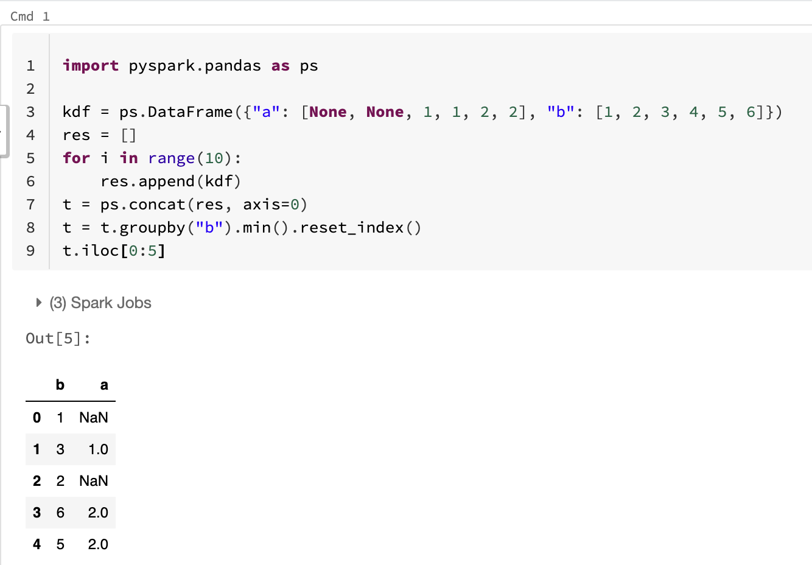

Why Fugue Does NOT Want To Be Another Pandas-Like Framework¶
Fugue fully utilizes Pandas for computing tasks, but Fugue is NOT a Pandas-like computing framework, and it never wants to be. In this article we are going to explain the reason for this critical design decision.
Benchmarking PySpark Pandas (Koalas)¶
This is an example modified from a real piece of Pandas user code. Assume we have Pandas dataframes generated by this code:
def gen(n):
np.random.seed(0)
return pd.DataFrame(dict(
a=np.random.choice(["aa","abcd","xyzzzz","tttfs"],n),
b=np.random.randint(0,100,n),
c=np.random.choice(["aa","abcd","xyzzzz","tttfs"],n),
d=np.random.randint(0,10000,n),
))
The output has four columns with string and integer types. Here is the user’s code:
df.sort_values(["a", "b", "c", "d"]).drop_duplicates(subset=["a", "b"], keep="last")
Based on the code, the user want to firstly partition the dataframe by a and b,
and in each group, the user wants to sort by c and d and then to get the last record
of each group.
Configuration and Datasets¶
Databricks runtime version: 10.1 (Scala 2.12 Spark 3.2..0)
Cluster: 1 i3.xlarge driver instance and 8 i3.xlarge worker instances
And we will use 4 different datasets: 1 million, 10 million, 20 million, and 30 million
g1 = gen(1 * 1000 * 1000)
df1 = spark.createDataFrame(g1).cache()
df1.count()
pdf1 = df1.to_pandas_on_spark()
g10 = gen(10 * 1000 * 1000)
df10 = spark.createDataFrame(g10).cache()
df10.count()
pdf10 = df10.to_pandas_on_spark()
g20 = gen(20 * 1000 * 1000)
df20 = spark.createDataFrame(g20).cache()
df20.count()
pdf20 = df20.to_pandas_on_spark()
g30 = gen(30 * 1000 * 1000)
df30 = spark.createDataFrame(g30).cache()
df30.count()
pdf30 = df30.to_pandas_on_spark()
Comparison 1¶
Let’s firstly follow the user’s original logic, and we will discuss the alternative solution later.
In this Databrick’s article the author claimed that Pandas users will be able to scale their workloads with one simple line change in the Spark 3.2 release. So we will first convert the Pandas dataframe to the Spark Pandas dataframe (and without any other change) to verify the result.
On the other hand, in traditional Spark, a window function solution is typical. So we will also add the window function solution to the comparison.
To force the full execution of the statement and also to verify result consistency, at the end of each execution
we will compute the sum of column d and print.
Based on the output, the 3 solutions all have consistent result, meaning they have no correctness issue, now let’s take a look at their speed:

With a 32 core Spark cluster, both Spark solutions are significantly faster than the single core Pandas solution
The window function solution is 30% to 50% faster than the Spark Pandas solution
On a local machine, a global sort is a very popular technique that is often seen in Pandas code. And in certain scenarios it outperforms other methods. However the global sort operation in distributed computing is difficult and expensive. The performance depends on each specific computing framework’s implementation. Spark Pandas has done an amazing job, but even so, it is still significantly slower than a window function.
Rethinking about the problem we want to solve, a global sort on the entire dataset is not necessary. If convenience is the only thing important, then switching the Pandas backend to Spark Pandas may make sense. However the whole point of moving to Spark is to be more scalable and performant. Moving to window function that will sort inside each partition isn’t overly complicated, but the performance advantage is significant.
Comparison 2¶
In the second comparison, we simplify the original problem to not consider column c. We only need to remove
c in sort_values to accommodate the change
df.sort_values(["a", "b", "d"]).drop_duplicates(subset=["a", "b"], keep="last")
Again, it’s intuitive and convenient and Spark Pandas can inherit this change too. However, this new problem
actually means we want to group by a and b and get the max value of d. It can be a simple aggregation
in big data. So in this comparison, we add the simple Spark aggregation approach.

The previous performance pattern stays the same
Spark aggregation takes ~1 sec regardless of data size
So now, do you want to just remove column c for simplicity or do you want to rewrite the logic for performance?
Comparison 3¶
Let’s go back to the original logic where we still have 4 columns. By understanding the intention, we can have an alternative Pandas solution:
df.groupby(["a", "b"]).apply(lambda df:df.sort_values(["c", "d"], ascending=[False, False]).head(1))
When testing on the 1 million dataset, the original logic takes 1.43 sec while this new logic takes 2.2 sec. This is probably
one of the reasons the user chose the sort & dedup approach. On a small local dataset, a global sort seems to be faster.
In this section, we are going to compare groupby-apply with sort-dedup on all datasets. In addition, this fits nicely with Pandas UDF scenarios, so we will also compare with the Pandas UDF approach.
To avoid duplication, we extract the lambda function:
def largest(df:pd.DataFrame) -> pd.DataFrame:
return df.sort_values(["c","d"], ascending=[False, False]).head(1)
Unfortunately, the first issue we encounter is that Spark Pandas can’t take this function
g1.groupby(["a", "b"]).apply(largest) # g1 is a pandas dataframe, it works
df1.groupby(["a", "b"]).applyInPandas(largest, schema="a string,b long,c string,d long") # Pandas UDF works
pdf1.groupby(["a", "b"]).apply(largest) # pdf1 is a spark pandas dataframe, it doesn't work
So for Spark Pandas we will need to use:
pdf1.groupby(["a", "b"]).apply(lambda df: largest(df))
This breaks the claim that with an import change everything works out of the box.
Now let’s see the performance chart:

For Pandas, when data size increases, groupby-apply has more performance advantage over sort-dedup
For Spark Pandas, groupby-apply is even slower than Pandas
Pandas UDF is the fastest Spark solution for this problem
Summary of Comparisons¶
With the 3 comparisons we find out:
The convenience is at the cost of performance
Simply switching backend doesn’t always work (not 100% consistent)
Simply switching backend can cause unexpected performance issues
Big data problems require different ways of thinking, users must learn and change their mindset
Example Issues of PySpark Pandas (Koalas)¶
The promise of PySpark Pandas (Koalas) is that you only need to change the import line of code to bring your code from Pandas to Spark. This promise is, of course, too good to be true. In this section we will show some common operations that don’t behave as expected. Some of these might be fixable, but some of them are also inherent to the differences of Pandas and Spark.
From here on, we’ll use the word Koalas to refer to PySpark Pandas to easily distinguish it from Pandas.
Setup¶
First, we set-up Koalas and Pandas DataFrames. They will take the same input and we can check the head() of the Koalas DataFrame.
import pandas as pd
import pyspark.pandas as ps
df = pd.DataFrame({"a": [None, None, 1, 1, 2, 2], "b": [1, 2, 3, 4, 5, 6]})
kdf = ps.DataFrame({"a": [None, None, 1, 1, 2, 2], "b": [1, 2, 3, 4, 5, 6]})
kdf.head()
| a | b | |
|---|---|---|
| 0 | NaN | 1 |
| 1 | NaN | 2 |
| 2 | 1.0 | 3 |
| 3 | 1.0 | 4 |
| 4 | 2.0 | 5 |
Operation 1 - Reset Index¶
The first operation we’ll look at is resetting an index. Note that Spark does not have any such concept. In order to provide a consistent experience to Pandas, the Koalas DataFrame is a Spark DataFrame that has an index added to it. Because it isn’t a Spark DataFrame, you need to convert it to a Spark DataFrame to take advantage of Spark code.
So let’s look at a simple operation, groupby-max. First, we do it with Pandas. Note NULL values drop by default in Pandas while they are kept in Spark. This is expected.
df.groupby("a").max("b")
| b | |
|---|---|
| a | |
| 1.0 | 4 |
| 2.0 | 6 |
For some reason though, the same syntax does not work in Koalas. This is a minor issue, but shows that the APIs will not always match.
import traceback
try:
kdf.groupby("a").max("b")
except:
traceback.print_exc()
Traceback (most recent call last):
File "/var/folders/x5/f4r6ylss0k7dwh8c_0dmzd_40000gn/T/ipykernel_34170/2338264843.py", line 4, in <module>
kdf.groupby("a").max("b")
TypeError: max() takes 1 positional argument but 2 were given
So we tweak the syntax a bit and it works. This operation is consistent with Pandas.
kdf.groupby("a").max()
| b | |
|---|---|
| a | |
| 1.0 | 4 |
| 2.0 | 6 |
In Pandas, it is very common operation to reset_index(). So we add it to the Koalas expression.
kdf.groupby("a").max().reset_index()
21/12/08 21:40:07 WARN WindowExec: No Partition Defined for Window operation! Moving all data to a single partition, this can cause serious performance degradation.
21/12/08 21:40:07 WARN WindowExec: No Partition Defined for Window operation! Moving all data to a single partition, this can cause serious performance degradation.
21/12/08 21:40:07 WARN WindowExec: No Partition Defined for Window operation! Moving all data to a single partition, this can cause serious performance degradation.
21/12/08 21:40:07 WARN WindowExec: No Partition Defined for Window operation! Moving all data to a single partition, this can cause serious performance degradation.
| a | b | |
|---|---|---|
| 0 | 1.0 | 4 |
| 1 | 2.0 | 6 |
Spark has a lot of warning messages. This one though can not be easily ignored. It says we did not define a partitioning scheme, so all of the data is being collected to a single machine and then the index is added. This is very expensive and likely to crash for big data. It also defeats the purpose of using a Spark backend. The default reset_index() behavior is actually very harmful, and likely to hurt performance compared to if you just used Pandas. This is because there is an overhead to move data round in order to add the index.
Pandas relies on the index a lot, while Spark has no concept of index. Thus, a design decision has to be made whether or not to be consistent with Pandas or Spark. Koalas chooses to be consistent with Pandas. We’ll look at one more example with the index.
Operation 2 - iloc
All of the data in Pandas lives in a single machine. Because of this, indexing it is trivial. What is the index? It is a global sort of the data. When we do reset_index(), we number the data from starting from 0 to the last record. Once we do this, we can use the iloc operation, or look up by index and we are guaranteed order. A simple Pandas example is below. Everything is as expected.
df = pd.DataFrame({"a": [None, None, 1, 1, 2, 2], "b": [1, 2, 3, 4, 5, 6]})
res = []
for i in range(10):
res.append(df)
t = pd.concat(res, axis=0)
t = t.groupby("b").min().reset_index()
t.iloc[0:5]
| b | a | |
|---|---|---|
| 0 | 1 | NaN |
| 1 | 2 | NaN |
| 2 | 3 | 1.0 |
| 3 | 4 | 1.0 |
| 4 | 5 | 2.0 |
Notice how doing iloc in Pandas gives the values for b from 1 to 5 in order. Let’s compare this operation in Koalas. For the Koalas version of this operation, you may get consistent records if you run this locally. But when run distributedly on a cluster, you will see inconsistent behavior. Below is a screen shot of a run on Databricks.

The iloc values give us a different order of records. This is because order is not guaranteed in Spark, and it’s expensive to keep a global location index across multiple machines. This can cause inaccurate results even if code successfully runs.
Joining¶
For joining, Pandas joins NULL with NULL while Spark does not. Let’s see who Koalas is consistent with. Recall for groupby it was consistent with Pandas.
df2 = pd.DataFrame({"a": [None, 1, 2], "c": [1, 2, 3]})
df.merge(df2, on="a")
| a | b | c | |
|---|---|---|---|
| 0 | NaN | 1 | 1 |
| 1 | NaN | 2 | 1 |
| 2 | 1.0 | 3 | 2 |
| 3 | 1.0 | 4 | 2 |
| 4 | 2.0 | 5 | 3 |
| 5 | 2.0 | 6 | 3 |
We run the same operation on Koalas below.
kdf2 = ps.DataFrame({"a": [None, 1, 2], "c": [1, 2, 3]})
kdf.merge(kdf2, on="a")
21/12/08 23:38:44 WARN WindowExec: No Partition Defined for Window operation! Moving all data to a single partition, this can cause serious performance degradation.
21/12/08 23:38:44 WARN WindowExec: No Partition Defined for Window operation! Moving all data to a single partition, this can cause serious performance degradation.
21/12/08 23:38:45 WARN WindowExec: No Partition Defined for Window operation! Moving all data to a single partition, this can cause serious performance degradation.
21/12/08 23:38:45 WARN WindowExec: No Partition Defined for Window operation! Moving all data to a single partition, this can cause serious performance degradation.
21/12/08 23:38:45 WARN WindowExec: No Partition Defined for Window operation! Moving all data to a single partition, this can cause serious performance degradation.
| a | b | c | |
|---|---|---|---|
| 0 | 1.0 | 3 | 2 |
| 1 | 1.0 | 4 | 2 |
| 2 | 2.0 | 5 | 3 |
| 3 | 2.0 | 6 | 3 |
We can see the NULL values are dropped. This means that for join, Koalas is actually closer to the Spark behavior than Pandas. There is a consistency issue.
Mixed Types in Columns¶
One of the things acceptable in Pandas is having columns that contain different data types. The reason it’s hard to execute this behavior in Spark is because Spark operates on different machines, and in order to guaratee consistent behavior across partitions, schema needs to be explicit.
Related to this, inferring schema is also a very expensive operation in Spark, and can even be inaccurate if partitions contain different types.
In the snippet below, we’ll see that Koalas is consistent with Spark in being unable to have mixed type columns.
mixed_df = pd.DataFrame({"a": [None, "test", 1], "b": [1, 2, 3]})
try:
ps.from_pandas(mixed_df)
except:
traceback.print_exc()
Traceback (most recent call last):
File "/var/folders/x5/f4r6ylss0k7dwh8c_0dmzd_40000gn/T/ipykernel_34170/2333051347.py", line 3, in <module>
ps.from_pandas(mixed_df)
File "/opt/miniconda3/envs/fugue-tutorials/lib/python3.7/site-packages/pyspark/pandas/namespace.py", line 143, in from_pandas
return DataFrame(pobj)
File "/opt/miniconda3/envs/fugue-tutorials/lib/python3.7/site-packages/pyspark/pandas/frame.py", line 520, in __init__
internal = InternalFrame.from_pandas(pdf)
File "/opt/miniconda3/envs/fugue-tutorials/lib/python3.7/site-packages/pyspark/pandas/internal.py", line 1460, in from_pandas
) = InternalFrame.prepare_pandas_frame(pdf)
File "/opt/miniconda3/envs/fugue-tutorials/lib/python3.7/site-packages/pyspark/pandas/internal.py", line 1533, in prepare_pandas_frame
spark_type = infer_pd_series_spark_type(reset_index[col], dtype)
File "/opt/miniconda3/envs/fugue-tutorials/lib/python3.7/site-packages/pyspark/pandas/typedef/typehints.py", line 329, in infer_pd_series_spark_type
return from_arrow_type(pa.Array.from_pandas(pser).type)
File "pyarrow/array.pxi", line 904, in pyarrow.lib.Array.from_pandas
File "pyarrow/array.pxi", line 302, in pyarrow.lib.array
File "pyarrow/array.pxi", line 83, in pyarrow.lib._ndarray_to_array
File "pyarrow/error.pxi", line 122, in pyarrow.lib.check_status
pyarrow.lib.ArrowTypeError: Expected bytes, got a 'int' object
Inconsistent Operation Behavior¶
Some of the same API can have slightly different behavior. Take the following assign() statement. We create two columns c and c_diff.
df.assign(c=df['a'] * df["b"], c_diff=lambda x: x['c'].diff())
| a | b | c | c_diff | |
|---|---|---|---|---|
| 0 | NaN | 1 | NaN | NaN |
| 1 | NaN | 2 | NaN | NaN |
| 2 | 1.0 | 3 | 3.0 | NaN |
| 3 | 1.0 | 4 | 4.0 | 1.0 |
| 4 | 2.0 | 5 | 10.0 | 6.0 |
| 5 | 2.0 | 6 | 12.0 | 2.0 |
The same operation will actually fail in Koalas.
try:
kdf.assign(c=df['a'] * df["b"], c_diff=lambda x: x['c'].diff())
except:
traceback.print_exc()
Traceback (most recent call last):
File "/var/folders/x5/f4r6ylss0k7dwh8c_0dmzd_40000gn/T/ipykernel_34170/10798204.py", line 2, in <module>
kdf.assign(c=df['a'] * df["b"], c_diff=lambda x: x['c'].diff())
File "/opt/miniconda3/envs/fugue-tutorials/lib/python3.7/site-packages/pyspark/pandas/frame.py", line 4903, in assign
return self._assign(kwargs)
File "/opt/miniconda3/envs/fugue-tutorials/lib/python3.7/site-packages/pyspark/pandas/frame.py", line 4916, in _assign
"Column assignment doesn't support type " "{0}".format(type(v).__name__)
TypeError: Column assignment doesn't support type Series
This fails because the Pandas implementation can create c_diff after c, but for Koalas, they are created at the same time and c_diff can’t reference c. The error does not make this immediately clear. There are a lot of caveats to watch out for when using Koalas.
Conclusion¶
We have shown some inconsistencies between Pandas and Koalas. Some of these are because Pandas was inherent not made for distribute compute. Some operations are harder to carry over, or in some cases, they don’t make sense like iloc. These issues are not fixable because they are ingrained in the Pandas mindset. This is why Fugue deviates away from being another Pandas-like interface. Fugue considers Spark first, and then extends to local development rather than the other way around.
Ultimately, changing one line in the import to bring code to Spark is an unrealistic expectation. There are a lot of tradeoffs to consider, and in order to support a Pandas interface, there needs to be tradeoffs in consistency and performance. If Koalas, is neither consistent with Pandas or Spark, how does it help?